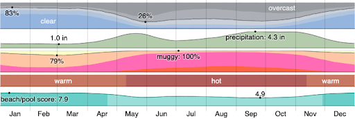
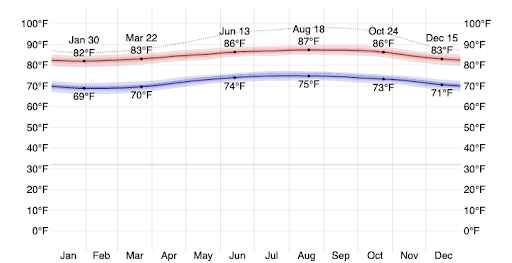

Homepage | Geography & Landforms | Climate & Endemic Organisms | Language & Economy | 3 Special Things To See Or Do In Isla Isabela | Photos Of Isla Isabela | References | Feedback
The weather at the island is typically warm and can get windy and partly cloudy at times. The best time for hot-weather activities are around the months November to April. This is when it would be a good temperature and not too hot.
.......................................................................................................................................
The typical temperature at this island ranges from around 69°F to 87°F. In rare cases will the temperature go up to 90°F or below 66°F. 